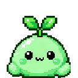
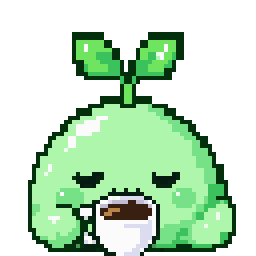

He notices the broad stuff.
Typing, coding, music, terminals, idle time, power changes—and then decides whether to react.

mochi v0.4 alpha GitHubhandcrafted for Linux
Mochi is a tiny pixel companion who wanders, naps, reacts to your desktop, works beside you, and now even holds onto things for you.
click Mochi · drag Mochi · click the desktop icons
No streaks. No guilt. No “you missed yesterday.” Mochi is just a small character sharing your desktop with you.
Typing, coding, music, terminals, idle time, power changes—and then decides whether to react.
Bond grows through normal interaction, without decay or punishment for going away.
Honestly? Same.
Pocket is a local-first shelf for files, folders, links, text, and dropped images. On the real app, originals stay where they are.
On desktop, you can also drag one of these cards onto Mochi. Or drop a real local file here— this demo only reads its filename in your browser.
drop something on Mochi
Nothing here yet.
Mochi has room for ten things in the real app.
Every reaction is authored frame by frame. Pick one and bother Mochi.
Mochi’s awareness is local and rule-based. It works from coarse signals, not your words, document names, window titles, or screen contents.
Fedora + GNOME + Wayland is the primary tested setup. Other Linux desktops are increasingly supported, but this is still alpha software.
$ git clone https://github.com/miflow13/mochi-desktop.git
$ cd mochi-desktop
$ ./install.shcurrent main · v0.4 alpha line
Mochi’s canonical Artist Kit is public: master reference, production sprites, exact dimensions, anchoring rules, animation conventions, and a submission template.

contribute